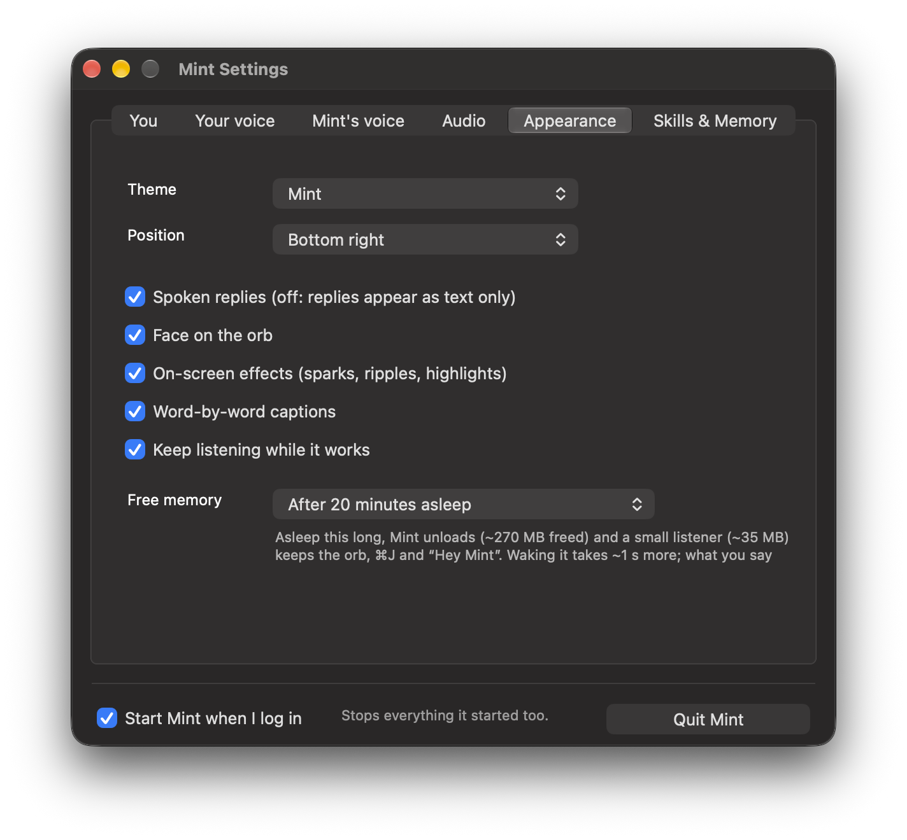
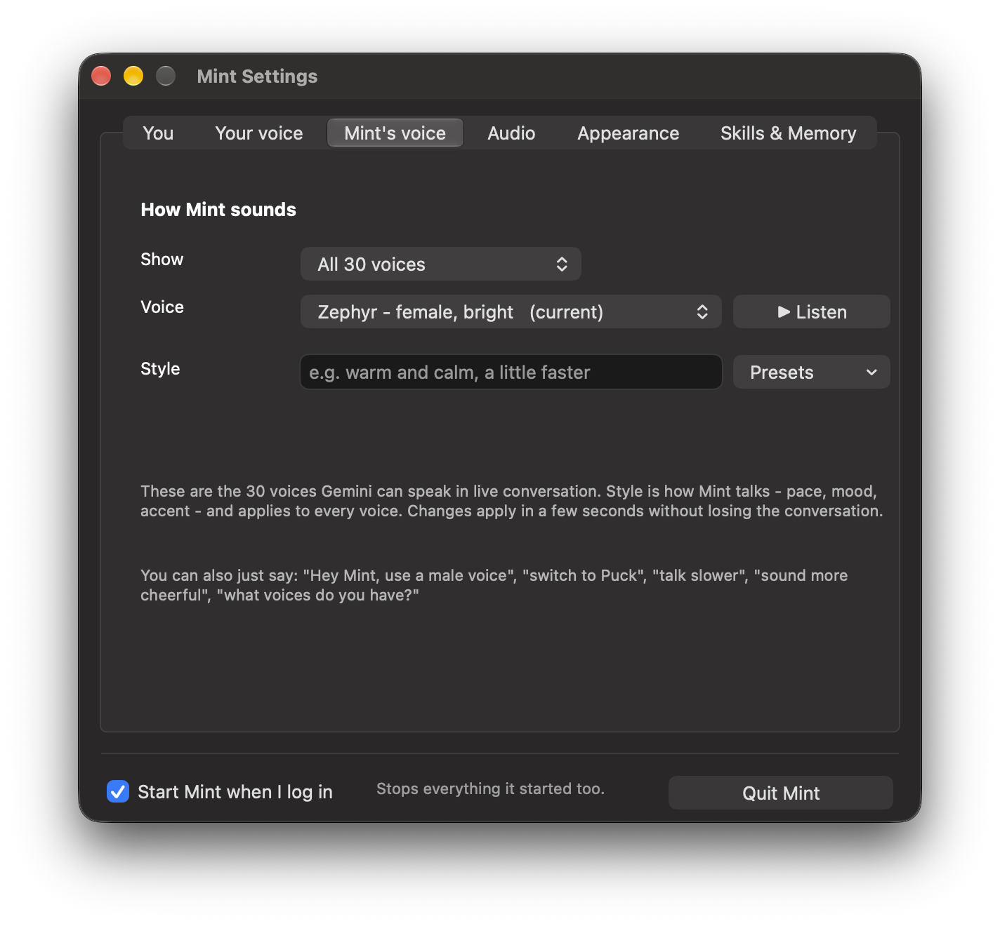
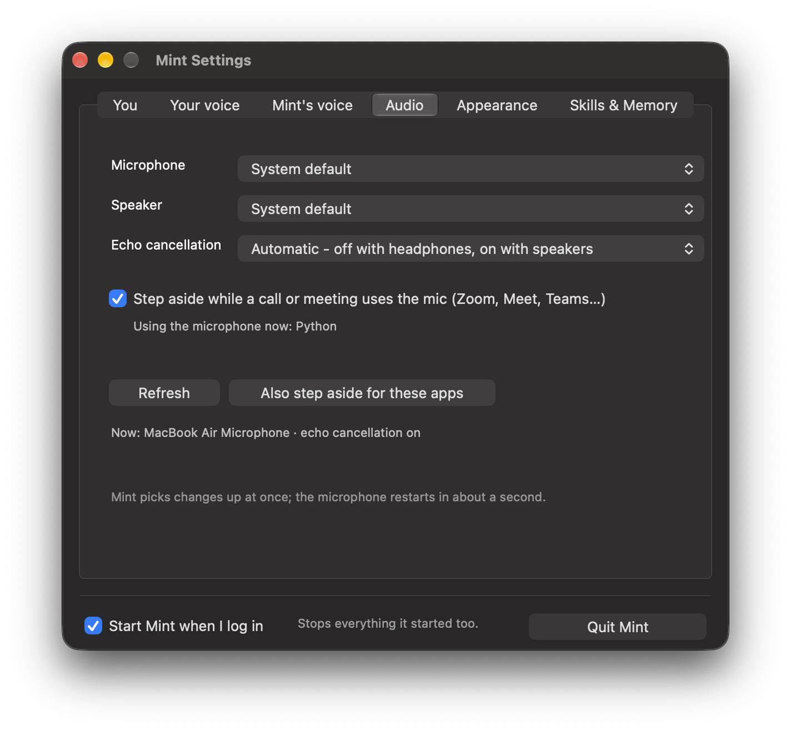

Settings
The Settings window
Open it from the menu bar icon ▸ Settings… (⌘,), the orb's right-click menu, or the chat's settings button. Or just ask Mint to change something.



| Tab | What is in it |
|---|---|
| You | The assistant's name (a new name gets its own wake word), your name, and “about you”, given to Mint at the start of every conversation |
| Your voice | Train, retrain, forget; voice lock; strictness; ignoring others |
| Mint's voice | Voice and speaking style |
| Audio | Devices, echo cancellation, calls |
| Appearance | Themes (Mint blue, Aurora, Sunset, Mint, Rose, Mono), position, face, captions, effects, free memory |
| Skills & Memory | Opens the Skills & Memory window |
In the menu
Face on the orb · Word-by-word captions · On-screen effects · Listen while working · Cute critter helpers (sub-agents) · Cute action flourishes · Visible in screen sharing · Position · Train my voice · Skills & memory · Quit Mint.
Files
settings.json applies within two seconds of an edit (shortcuts such as "toggle": "cmd+j", stop words, vocabulary, "wander": false). custom.json holds accounts, Slack workspaces and channels, aliases, routines and standing instructions.
Settings
Quitting, and starting at login
- Settings ▸ Quit Mint (bottom of every tab), the menu bar or orb menu ▸ Quit Mint, or say “quit Mint”.
- This stops everything: agents, Codex runs, preview servers. “Quit Spotify” quits Spotify, never Mint.
- Start Mint when I log in sits next to the Quit button. Start it again from Spotlight: “Mint”.
quit Mint
go to sleep
Settings
Rules Mint never breaks
| Rule | |
|---|---|
| 🔒 | Never enters passwords or card numbers, never fills password fields, never writes secrets into files, skills or memories |
| ✉️ | Never sends an email: drafts only. A message, post or form goes out only when you asked, and never twice within two minutes |
| 🗂️ | Never quits your apps unless asked; “delete” means the Trash; never overwrites a file without a backup |
| 🚫 | Private folders (keys, keychains, browser profiles, Mail, Messages) are off limits |
| 🧰 | AppleScript can't run shell commands; shell access is off unless Mint is started with MINT_ALLOW_SHELL=1 |
| 🌐 | Browser scripts can't read cookies or storage, send data out, or submit forms |
| ✋ | “Stop” halts everything at once, including queued clicks and keys |